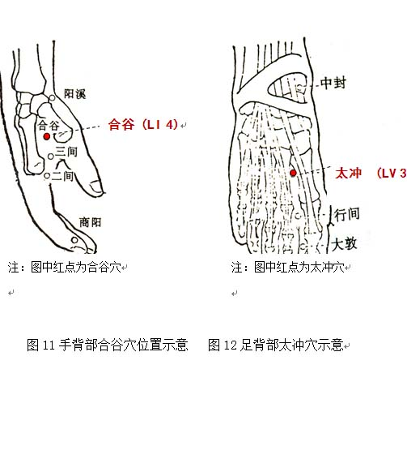

特禀质调理方法
1. 调体专用产品
【名称】香苏饮
【食用方法】每次1-2袋，以适量温开水冲调食用，每天2次。
2. 情志调摄
过敏体质的人因对过敏原敏感，容易产生紧张、焦虑等情绪，因此要在尽量避免过敏原的同时，还应避免紧张情绪。
3. 饮食调养
饮食宜均衡、粗细搭配适当、荤素配伍合理，宜多食益气固表的食物，尽量少食辛辣、腥发食物，不食含致敏物质的食品，如蚕豆、白扁豆、羊肉、鹅肉、鲤鱼、虾、蟹、茄子、辣椒、浓茶、咖啡等。
参考食疗方：（1）固表粥：乌梅、黄芪、当归、粳米，具有益气养血脱敏功效，适合过敏体质易发皮肤过敏者食用。
（2）黄芪首乌藤炖猪瘦肉：黄芪、首乌藤、猪瘦肉、食盐、葱、生姜、料酒、味精各适量，具有益气养血、祛风脱敏功效，适合过敏体质者食用。
4. 起居调摄
起居要有规律，保持充足的睡眠时间。居室宜通风良好。生活环境中接触的物品如枕头、棉被、床垫、地毯、窗帘、衣橱易附有尘螨，可引起过敏，应经常清洗、日晒。外出也要避免处在花粉及粉刷油漆的空气中，以免刺激而诱发过敏病症。
5. 运动保健
宜进行慢跑、散步等户外活动，也可选择下棋、瑜珈等室内活动。不宜选择大运动量的活动，避免春天或季节交替时长时间在野外锻炼。运动时注意避风寒，如出现哮喘、憋闷的现象应及时停止运动。
6. 穴位保健
（1）选穴：神阙、曲池。
（2）定位：神阙位于腹中部，脐中央（见图13）。曲池位于肘横纹外侧端，屈肘，当尺泽与在肘横纹外侧端与肱骨外上髁连线中点（见图14）。
（3）操作：神阙采用温和灸。点燃艾条或借助温灸盒，对穴位进行温灸，每次10分钟。艾条温和灸点燃端要与皮肤保持2～3厘米的距离，不要烫伤皮肤。可每周操作1次。曲池采用指揉法。用大拇指或中指指腹按压穴位，做轻柔缓和的环旋活动，以穴位感到酸胀为度，按揉2～3分钟。每天操作1～2次。
